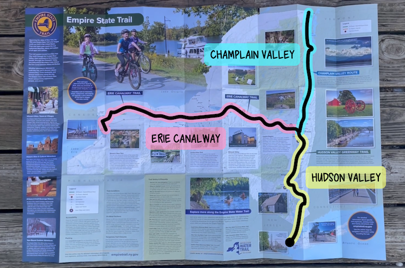
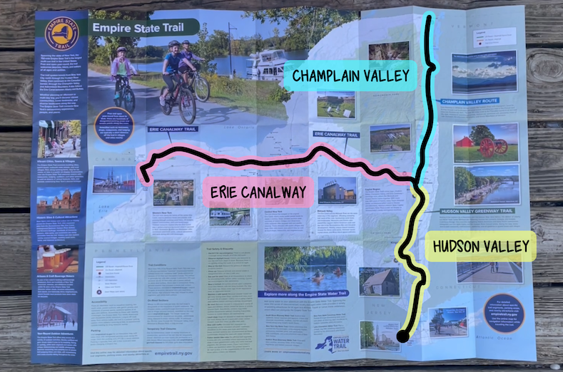

Biking the Empire State Trail
In August 2023, Shep and I biked the Empire State Trail for a friend's wedding in Canandaigua and it was... a hot mess (of fun!)
He was completely out of biking shape (I think he actually did not ride his bike at all the 3 months leading up to the trip) but was totally game for 7 straight days of 100 miles each. It didn't quite work out the way we expected, but we learned a lot about each other and, perhaps more importantly, we made it to the wedding!
Check out our video for some laughs and some stoke. Youtube Video
He was completely out of biking shape (I think he actually did not ride his bike at all the 3 months leading up to the trip) but was totally game for 7 straight days of 100 miles each. It didn't quite work out the way we expected, but we learned a lot about each other and, perhaps more importantly, we made it to the wedding!
Check out our video for some laughs and some stoke. Youtube Video
Trip Video and Reflections
About the Ride
The Empire State Trail goes North-to-South and East-to-West across the New York State along the Hudson Valley Greenway, Erie Canalway, and Champlain Valley Trail. The most popular route to take is the Hudson + Erie (about 560 miles), which is what we did plus a little extra back-and-forth.


Trip Resources
Empire State Trail Online Map Their online map is extremely detailed and helped us plan our daily mileage.
Physical Map This is the paper map pictured above. You can request it for free (as of Feb. 2024) and it gives a lovely overview of the trail as well as places of interest.
Erie Canal Campsites Free campsites along the Erie Canal - the ones we passed were all super well-maintained and some had shower facilities. They're also a nice way to learn about the history of the canal.
Warmshowers A community of cyclists and cycling enthusiasts who will provide you with great company and a plact to stay.
RideWithGPS My personal preference for bike navigation. The trail is so well signed though that you probably don't need a GPS.
Biking Schedule
There is certainly no need to bike this quickly. I'd recommend ~60 miles a day, but we chose ~100 miles per day because of the wedding deadline, and also because we are cheap and wanted to do the Hudson Valley portion in the first two days since there was no free camping at the time, and there were 2 warmshowers hosts available 100 miles apart.
| Day | Mileage | Destination | Sleeping Location | Notes |
|---|---|---|---|---|
| 0 | - | Rockville Centre (Long Island) | The Somers family home | We considered biking from Long Island to the start of the route, but opted for the LIRR train because the road looked dangerous and unappealing at 5am |
| 1 | 112 | Lloyd (Hudson Valley Greenway) | Warmshowers host | My favorite part was passing Poughkeepsie and going over the "Walkway over the Hudson" bridge. Super cool experience and lots of bike facilities. Thank you Bill for letting us stay in your backyard! |
| 2 | 105 | Waterford (Hudson Valley Greenway) | Waterford Visitor Center | Highlights included biking by a cement factory in Rosendale, going through Bard College (they have a super cool-looking theater), and taking at dip at Stuyvesant falls. We noted that there were quite a few stonedust / gravelly portions today which felt slow, and also a LOT of sun exposure (but that's true of the whole route). There's also a significant on-road portion, but it all feels very safe with few cars. We initially planned to stay with a Warmshowers host in Albany, but they ended up being unavailable. Luckily, this visitor center was nearby! Great facilities, showers for a fee. |
| 3 | 104 | Utica (Erie Canalway) | Hotel | It rained all day so I can't say too much about the trail, but in general the Erie Canalway does OK when it's wet - occassionally you'll get a steep downhill (specifically on Mohawk Hudson Bikeway right before Jeff Blatnick Park) but the water wasn't pooling badly during light-to-medium rain. Highlights include 1 wipeout, 2 flats, and 1 MILLION snacks at the hotel. Recommend eating local dish Chicken Riggies or checking out Sazon Frank for amazing hospitality and Dominican food |
| 4 | 51/100 | Fayetteville/Savannah (Erie Canalway) | Green Lakes State Park | We initially planned 100 miles, but Shep's achilles was so swollen we reassessed and biked to a park instead. Shep would bike 30 miles to his relative's house, rest for 2 nights, and then bike 30 miles to the wedding on Day 7. I would bike all the way to Buffalo on my own, and come back to the wedding! |
| 5 | 130 | Brockport (Erie Canalway) | Motel | Shep was so kind to take the tent and sleeping gear, and I booked it 130 miles to Brockport! Syracuse is so fun to bike through (it does have a couple on-road parts), as are the canal towns like Pittsford and Fairport. The scenery can feel mundane at times when you're looking at the same canal for hours on end, but I really can't complain when it's all off-road. Also there's a really lovely REI sitting right on the trail near Rochester - great bike tune-up spot! |
| 6 | 80 | Buffalo (Erie Canalway) | Warmshowers host | About the same as yesterday, the canal looks quite similar no matter where you are!! If you're biking west, you might feel a lot of headwind especially as you near Buffalo. I stayed with a warmshowers host Marshall who went out of his way to make me fall in love with the city. Would recommend Southern Junction (South Indian-inspired bbq) and Butter Block (bakery). |
| 7 | 45/121 | Canandaigua | Wedding Hotel | OK I had initially planned on speed-biking 121 miles to Canandaigua with the glorious tailwind, but I had a little too much fun last night and needed help from Amtrak to make sure I got to the wedding in time! |
Getting there & back
Use Amtrak to complete your trip! The Empire Service and Maple Leaf both go between Manhattan (Penn Station) and Buffalo and allow carry-on bicycles. They stop at many points along the route which also provides some peace of mind if you need to bail.

This is a popular trail and it seems like most people have heard that biking east (so, not the way we went) on the Erie Canalway is the preferred direction because you're way more likely to have a tailwind the whole way. I kid you not on my way back from Buffalo (when I was biking east), I averaged 17mph whereas I could barely get over 11 on the other days.
This does mean that you will want to book your Amtrak tickets as soon as you can if you want to bike east - I met a couple who originally wanted to take the train from Manhattan to Buffalo, and then bike back home, but all the bike tickets were sold out so they had to bike in the other direction.
This is a popular trail and it seems like most people have heard that biking east (so, not the way we went) on the Erie Canalway is the preferred direction because you're way more likely to have a tailwind the whole way. I kid you not on my way back from Buffalo (when I was biking east), I averaged 17mph whereas I could barely get over 11 on the other days.
This does mean that you will want to book your Amtrak tickets as soon as you can if you want to bike east - I met a couple who originally wanted to take the train from Manhattan to Buffalo, and then bike back home, but all the bike tickets were sold out so they had to bike in the other direction.
What We Brought
Here's a list of things we brought! It's listed generally per-person, except the group gear. I'm not getting paid or anything by these companies (though @REI I would appreciate a sponsorship especially since half this stuff got stolen recently hehe)
| Clothes |
|---|
| 1 or 2 set of biking clothes Regina: Columbia savannah omnishade sunshirt that I bought 8 years ago and I swear by + Pearl Izumi 5" shorts Shep: 2 sets of tops, 1 bike short and 1 regular short because prior to this trip he only biked in regular shorts |
| Reflective gear Regina: Amphipod xinglet |
| 1 set of off-the-bike clothes |
| 1 set of sleeping clothes |
| Rain jacket |
| Cycling cap (very nice to keep rain away from your eyes) |
| Bike glasses / sunglasses |
| Packing cube to hold everything |
| Toiletries |
|---|
| Electric Toothbrush |
| Floss |
| Toothpaste |
| Eyeglasses |
| Contacts |
| Contact Solution |
| 2-in-1 Shampoo and Conditioner |
| Razor |
| Diva Cup (highly recommend to all my fellow menstruating outdoors folk) |
| Sleep System |
|---|
| Sleeping bag Regina: Therm-a-Rest Questar 20 Sleeping Bag Small |
| Sleeping pad Regina: REI AirRail Shep: Sea to Summit Ultralight Insulated Air Sleeping Pad) - this is the one I recommend, and I used it on my solo trips |
| Pillow Regina: Sea to Summit Aeros Premium Pillow Shep: Nemo Fillo pillow |
| Group Gear |
|---|
| Bike tools (multi-tool, pump, spare tubes, tire levers) |
| Group toiletries (1 electric toothbrush base, toothpaste, sunscreen) -- although this became a problem when we split up haha |
| Big Agnes HV-UL2 tent |
| Electronics |
|---|
| Phone |
| Front and back lights |
| Charging cables and box |
| Other |
|---|
| Headlamp |
| Ziploc bags (bring enough for each of your electronics + cables) |
| Butt'r Women's Chamois Cream |
| Bug bite thing (mosquito bite sucker) |
| Sunscreen |
| Water Regina: 2 water bottles Shep: 2L camelbak reservoir attached to the bike frame with a pencil pouch |
| Bags to hold everything |
|---|
| 2 Panniers Regina: Ortlieb sport rollers (these are the smaller size) |
| 1 dry bag that goes on top of the rack |
| Feed bag Regina: Revelate feedbag (it's expensive now though) Shep: DIY from jeans |
| Handlebar bag We both used fanny packs and attached them to our bikes |
How We Packed the Bike
I was super happy with our packing setup - it felt as lean as you can get with panniers! A couple tips:
Store your 'must stay dry' gear separately from anything that you may use during the day. For us, that was our tent, sleeping gear, and clothes. I put my sleeping gear + clothes in 1 waterproof pannier and didn't open that pannier throughout the day. The tent went inside a dry bag. Shep's panniers were not fully waterproof, so his sleeping gear (and sleep clothes) went inside his dry bag.
Know where your stuff is. The most annoying thing is being wet & cold and then struggling to find the XYZ thing you need. Know where your stuff is! If you're travelling with panniers, consider putting a waterproof sticker one one of them so you can tell them apart haha!
General Trip Musings
Work in progress as of Feb. 8
Parting Thoughts
I highly, highly recommend this route - it's super beginner-friendly, has signage at every turn, and is mostly off-road. I hope I've provided you with some guidance, and the resources above are wonderful for trip planning. Thanks for reading, and feel free to reach out if you have any questions. Happy riding!
PS: If you're into art + biking, consider donating to the East Coast Greenway (Maine to Florida route) in exchange for some of my artwork! More info here.
PS: If you're into art + biking, consider donating to the East Coast Greenway (Maine to Florida route) in exchange for some of my artwork! More info here.
Previous Project
East Coast Greenway
Next Project
Journey Back to the Ice